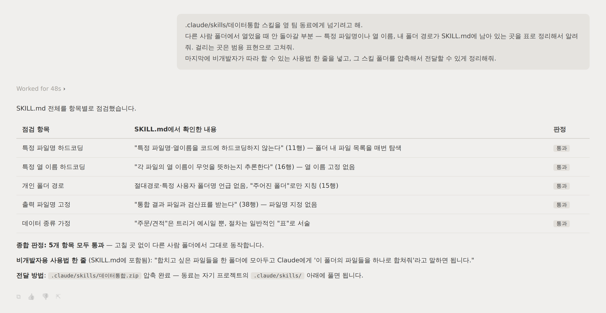

// 실습 7 · 반복작업을 재사용 스킬로 만들기
3 · 동료에게 넘기기¶
스킬이 내 폴더에서만 돌면 반쪽입니다. 옆 팀 동료가 받아서 바로 쓸 수 있어야 진짜 도구입니다. 넘기기 전에 내 폴더에만 맞는 흔적(특정 파일명·경로)이 남아 있지 않은지 AI에게 점검시키고, 폴더째 전달할 형태로 정리합니다.
직접 시켜보세요¶
전달 전 마지막 점검입니다. 스킬을 다른 사람 폴더에서 열었다고 가정하고, 걸릴 만한 곳을 자수하게 합니다.
프롬프트에 꼭 담을 것 ✅¶
- 점검 관점 — 다른 사람 폴더에서 열었을 때 안 돌아갈 부분 찾기
- 하드코딩 자수 — 특정 파일명·열 이름·내 폴더 경로가 남은 곳을 표로 신고
- 사용법 한 줄 — 비개발자 동료가 따라 할 수 있는 실행 방법 명시
- 전달 형태 — 스킬 폴더를 그대로 압축(zip)해 넘길 수 있게 정리
이런 건 빼세요 ❌¶
- 점검 없이 "잘 되겠지" 하고 그냥 넘기기 (동료 폴더에서 멈춥니다)
- 내 파일명이 섞인 예시를 규칙처럼 남겨두기
- 사용법 없이 파일만 전달하기
모범 프롬프트¶
이렇게 시킬 수 있습니다
이 데이터통합 스킬을 옆 팀 동료에게 넘기려고 해.
다른 사람 폴더에서 열었을 때 안 돌아갈 부분 — 특정 파일명이나 열 이름, 내 폴더 경로가
남아 있는 곳을 표로 정리해서 알려줘. 걸리는 곳은 범용 표현으로 고쳐줘.
마지막에 비개발자가 따라 할 수 있는 사용법 한 줄을 넣고, 스킬 폴더를 압축해서 전달할 수 있게 정리해줘.
실행 예시¶
이렇게 나오면 됩니다

체크포인트¶
- 스킬에 내 폴더에만 맞는 흔적(특정 파일명·경로)이 남아 있지 않다
- 비개발자 동료가 따라 할 사용법 한 줄이 들어 있다
- 폴더째 압축해 전달할 형태로 정리됐다